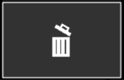

Guide to creating custom JSON keyboards¶
Using this keyboard editor custom JSON files can be generated that can be read into the program. Unlike normal keyboards, only one character per key is allowed, much like mobile keyboards. This means no usage of shift to select a different thing on the same key. It is however possible to construct multiple keyboards (lower- and uppercase) and switch between them using a key on the keyboard.
Basic structure¶
The hierarchy of the JSON file is like this when read into python:
# list of lists of lists
[
[
[], ..., []
],
...,
[
[], ..., []
]
]
If the data is of length 6 (a list of 6 lists), that means there are 6 rows of keys. All the objects within one row are keys.
The JSON file below would result in a keyboard with one row and three buttons with their labels and outputs being A, B and C.
[
["BASIC_KEY", "A"], ["BASIC_KEY", "B"], ["BASIC_KEY", "C"]
]
Or this, a keyboard with two rows and 4 buttons, 2 per row:
[
["BASIC_KEY", "A"], ["BASIC_KEY", "B"],
["BASIC_KEY", "C"], ["BASIC_KEY", "D"]
]
Keys¶
A key in a keyboard must have a key type (as specified in key_type.py).
Such a type must be provided in the JSON file. The examples above already
showed the use of basic keys (the "BASIC_KEY" type).
In the already provided keyboards, all basic letters and characters are of the
type BASIC_KEY.
Special keys¶
When constructing a keyboard, some key types in the JSON file result in a special key. These keys have special behaviour (which is most of the time indicated by their name).
"CLEAR_KEY": clears the keyboard.
"BACKSPACE_KEY": removes the last typed letter (or word if it was a prediction).
"TTS_KEY": (text-to-speech) reads out the current line of the keyboard.
"SPACE_BAR_KEY": adds an empty space.
"ENTER_KEY": adds a new line.
"SWITCH_TO_MENU_KEY": redirects to the settings menu.
"SWITCH_TO_LOWER_KEY": redirects to lower_case_layout
"SWITCH_TO_UPPER_KEY": redirects to upper_case_layout
"SWITCH_TO_SYMBOLS_KEY": redirects to symbols_layout
"SWITCH_TO_SYMBOLS2_KEY": redicrects to additional_symbols_layout
These special keys can have specific labels which also must be provided in the JSON file.
The JSON file below would result in a "SWITCH_TO_SYMBOLS_KEY"` with label “?123”.
[
["SWITCH_TO_SYMBOLS_KEY", "?123"]
]
Instead of text, keys can also have an icon as their label. In the key_icons folder,
some default icons can be found for, for example, the "TTS_KEY" or the "CLEAR_KEY".
The JSON file below has the information to construct a "CLEAR_KEY" with an icon.
[
["CLEAR_KEY", "key_icons\\clear_default.png"]
]
This would result in the following key:
{kind=link}